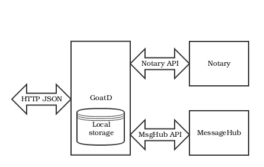

GoatD is your digital wallet.
Build and ship enterprise cryptofinance applications that run on the Monetas Platform.

GoatD
GoatD is a Notary client which runs as a daemon accepting HTTP JSON requests. It takes care of most of the heavy lifting: signing, message processing, history number allocation, commitment handling.
A sketch of the involved moving parts, only the GoatD component is included in
this package:

GoatD tracks the user’s state using cryptographically strong protocols. If GoatD’s state is lost (e.g. by dropping the Postgres database) then GoatD detects the mismatch with the Notary’s state and refuses to process further messages coming from the Notary. If such a situation should occur while testing/developing GoatD then the quickest way to restore GoatD’s functionality is to generate a fresh key pair and let it be funded again.
Binaries
In the directory ./bin you will find binaries for Linux, Mac and Windows.
Whenever you see a binary referenced in this readme the suffix has been dropped
for brevity, use the correct one for your platform.
Postgres setup
Before you get started you’ll need a running Postgres 9.5 database.
Database creation
Here, we assume that the a postgres user is setup that has the privilege of creating databases.
In the examples that follow in this document, we assume the username to be
goat and the database name to be goatdgoat. Of course, you can select your
own names.
Create a database with:
$ psql -U goat -c 'create database goatdgoat'
Setting up the tables
The required schema can be found in the schema.sql.
Import the schema with:
$ psql -U goat goatdgoat -f schema.sql
Starting GoatD
Running GoatD requires a unique ED25519 key pair. The secret key can be
generated with the bundled generatekey utility. For example:
$ ./generatekey -sk this-should-be-a-really-long-string-filled-with-entropy
The public key can be derived from the secret key and it is done within GoatD.
GoatD has many startup flags. The minimal set is:
- client-db-name: the name of the database in which GoatD uses
- example: goatdgoat
- client-db-user: the database user which GoatD uses
- example: goat
- client-sk: the secret key which GoatD uses to sign contracts
- example: the output of
./generatekey -sk your-random-string
- example: the output of
- notary-nym-id: the public identifier of the Notary
- example: Am11RgVrjWuCohGMVKDkEFLV2bKDN1MJDzLPRycjtzk1
- notary-url: the URL on which the Notary operates
- example:
https://goatdplatform.monetas.io:8121
- example:
- msghub-url: the URL on which the MsgHub operates
- example:
https://goatdplatformaux.monetas.io:8456
- example:
- fxdir-url: the URL on which the FX Directory operates
- example:
https://goatdplatformaux.monetas.io:2356
- example:
Starting a minimal GoatD with (substitute your secret key and db name):
$ ./goatd -client-db-name goatdgoat \
-client-db-user goat \
-client-sk your-secret-key \
-notary-nym-id Am11RgVrjWuCohGMVKDkEFLV2bKDN1MJDzLPRycjtzk1 \
-notary-url https://goatdplatform.monetas.io:8121 \
-msghub-url https://goatdplatformaux.monetas.io:8456
That is quite lengthy and is NOT the recommended way of running GoatD, besides
being unwieldy this exposes your secret key to anyone else on the computer who
is able to inspect running processes.
It is therefor recommended to use a flagfile. This file contains pairs of
flag=value delimited with new lines. An example is included under the name
goatd.conf.
You can now run goatd with:
$ ./goatd -flagfile ../goatd.conf
Find the Notary Nym ID
You can find the Notary Nym ID in the Unit contracts. These can be queried (for the Notary running on that URL) with:
$ curl https://goatdplatform.monetas.io:8121/v3.0/units
Examples
The simplest thing you can do is query GoatD about your own Nym ID:
$ curl 127.0.0.1:2360/v3.0/nym-id
"FzbrEY5ezDyHt8MADNCmfg2esrQTKDkxGiGiiQtsxn3w"
Getting the balances controlled by the running GoatD instance:
$ curl 127.0.0.1:2360/v3.0/balance
{}
Sending 100 units of unit ID 568dU... to recipient FzbrEY...:
$ curl -XPOST 127.0.0.1:2360/v3.0/transfers -d '{
"FzbrEY5ezDyHt8MADNCmfg2esrQTKDkxGiGiiQtsxn3z": {
"568dUfJN2vXaKMGrntSsyw5pNVkTwVw34cQ677w4aMoi": 100
}
}'
Endpoints
Each and every request needs to be prefixed with /v3.0, for brevity is this
omitted in the descriptions.
In these requests and responses we are using a notation in which we prefix a
dollar sign ($) to denote a variable. For example $unit1 will never actually
appear anywhere but it is used as a placeholder. In its place you would see a
hash of a document in real life.
Query Current balance
This call returns the units and their amounts controlled by this secret key.
Request
GET /balance
Response
200 OK
{
"$unti1": 124,
"$unit2": 43
}
Send Units
This call tries to send a specific amount of units to an other Nym. Multiple unit/balance pairs can be specified but only one recipient is accepted. All amounts must be positive. Note that fees will be added!
Request
POST /transfers?feesType=$feesType
{
"$recipient": {
"$unitID1": 123,
"$unitID2": 456
}
}
feesType is an optional query parameter and can take one of the following values:
- fixedOutput: the sender (you) pays the fees and the recipient receives the exact amount of units specified.
- fixedInput: the recipient pays the fees and the exact amount of units specified is deducted from the wallet.
If the parameter is missing, it defaults to fixedOutput.
Response
302 Found /transfers/$history_number
Or when insufficient funds:
400 Bad Request
{
"code": "not-enough-funds"
}
List send Transfers
This will return all the transfers in one long list.
Request
GET /transfers
Response
200 OK
{
"history_number": {
"transfer": {
...
}
"state": "$transfer_state"
},
...
}
The list can be empty.
transfer_state is one of: cancelled, pending, notarized.
Get a Transfer
A Transfer can also be retrieved by its history number.
Request
GET /transfers/$history_number
Response
200 OK
{
see List Transfers
}
Or
404 Not Found
Query units
This queries the Notary and returns a list of known units. This does not imply any balance.
Request
GET /units
Response
200 OK
{
"$unitID": {
$unitcontract
},
...
}
Query fees for a particular amount/unit
Request
GET /fees?unitID=$unitID&amount=$amount&feesType=$feesType
feesType has the same meaning as in Send Units.
Response
200 OK
$amount
When the UnitID cannot be found
404 Not Found
Cancel transfer
This cancels a transfer. A Notarized Transfer cannot be canceled. This functionality is only relevant when the other party became unavailable and you want to clean up your liabilities.
Request
POST /transfers/$history_number/cancel
Response
200 OK
Or when transfer $history_number is not found
404 Not Found
Query NymID
Informational call only. It will return your own Nym ID.
Request
GET /nym-id
Response
200 OK
"$nym-id"
Query FX Offers
Request
GET /fx/offers
Response
200 OK
{
"$baseUnitID": {
"$quoteUnitID": [
{
"rate": {
"numerator": $numerator,
"denominator": $denominator
},
"nymID": $fxProviderNymID,
"minimum": $minimum
},
...
]
},
...
}
The response is a collection of FX offers. An Offer represents an FX Provider price for a base unit. The price is defined in the Quote unit. More information.
The conversion rate is specified with a fraction $numerator/$denominator. For example, 1/100 means 1%, i.e. for 100 base units, 101 quote units need to be paid.
The $fxProviderNymID specifies the FX provider who will exchange the base units for quote units.
$minimum specifies the minimum amount of quote units that the FX provider is willing to exchange base units for.
Exchange Units
This call tries to exchange base units for quote units based on a fixed exchange rate. The rate is determined by the exchanger and can be queried with the Query FX Offers endpoint.
Request
POST /fx/exchange?baseUnitID=$baseUnitID"eUnitID=$quoteUnitID&amount=$amount&exchangeType=$exchangeType
baseUnitID specifies the units to buy.
quoteUnitID specifies the units to sell.
exchangeType can take one of the following values:
- fixedBase: The amount of quote units required are sold in order to buy the exact specified amount of base units is bought.
- fixedQuote: The amount of base units required to sell the exact specified amount of quote units is bought.
Response
302 Found /transfers/$history_number
Or when insufficient funds:
400 Bad Request
{
"code": "not-enough-funds"
}
Or when no suitable offer has been found (see Query FX Offers):
400 Bad Request
{
"code": "exchange-no-offer"
}
Or when the quote amount is smaller than the minimum specified by the offer:
400 Bad Request
{
"code": "exchange-minimum"
}
Baarerstrasse 53,
Switzerland, 6300 Zug
+41 41 552 11 33